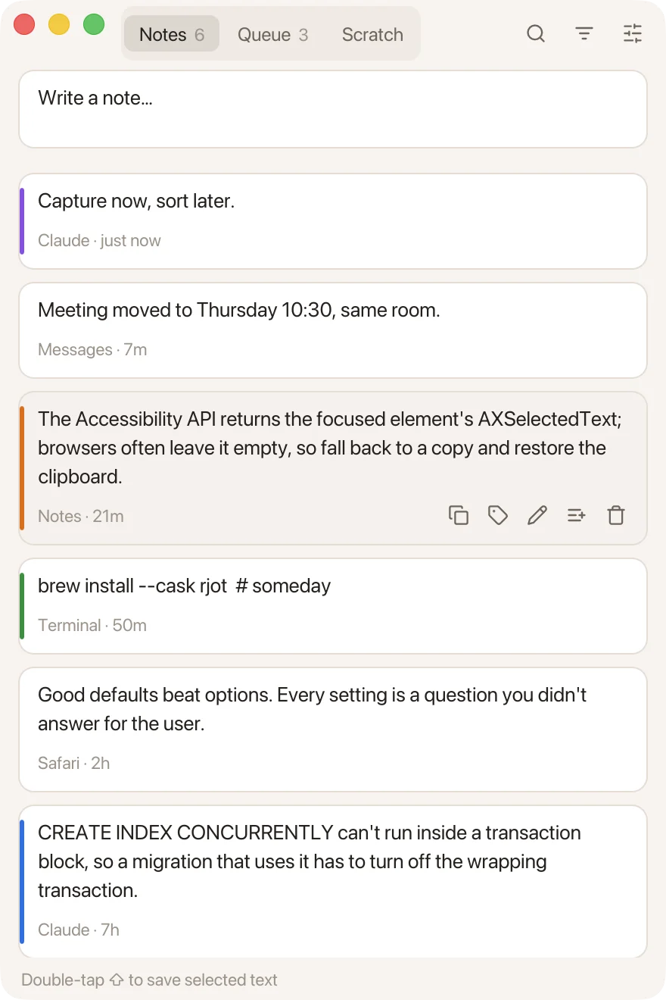

Base kit: Notes
6 caps
Every selection you keep lands here, newest first, with the app it came from and when. Nothing selected? The same gesture opens a quick note.
Save the selection
Save a typed note
FSearch